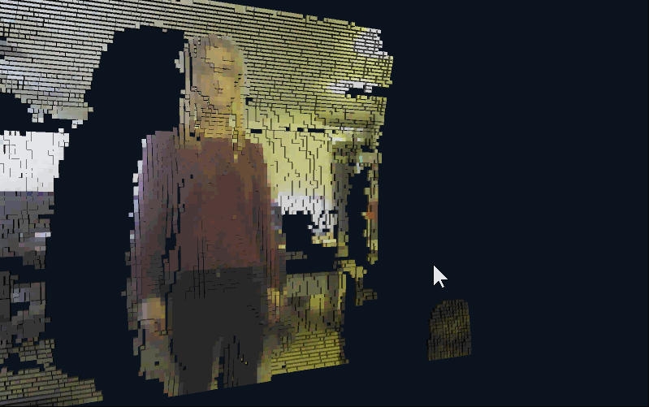
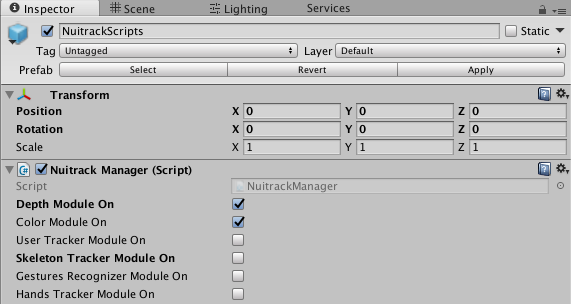
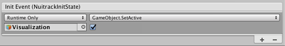
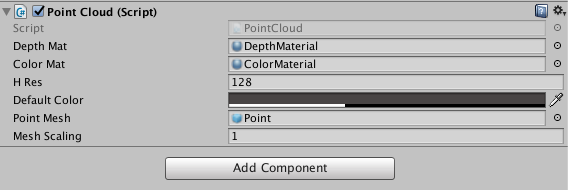
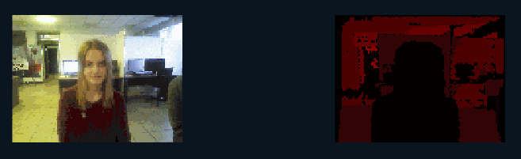
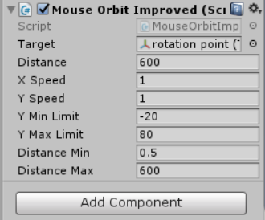

In this tutorial, you'll learn how to create a point cloud in the Unity editor. To do this, you'll need a sensor (ideally, with an RGB camera) and Nuitrack SDK, as well as a mobile device (optional). The point cloud may be used in many fields, such as 3D modeling, 3D gaming, VR apps, etc. The point cloud is created using the color and depth data received from the sensor.
To create this project, you'll need just a couple of things:
-
Nuitrack Runtime and Nuitrack SDK
-
Any supported sensor (see the complete list at Nuitrack website)
-
Unity 2017.4 or higher
You can find the finished project in Nuitrack SDK: Unity 3D → NuitrackSDK.unitypackage → Tutorials → Point Cloud

Setting Up the Environment
-
Create a new Scene in Unity: File → New Scene
-
In the scene, create 2 squares: GameObject → 3D Object → Quad (x2). We will use them as planes to display the color and depth received from the sensor. For convenience, let's name them QuadDepth (for depth) and QuadColor (for color).
-
Then, create 2 materials for depth and color respectively: create the Materials folder in the Assets folder, then, in the Project tab: RC → Create → Material. For convenience, let's name the materials ColorMaterial and DepthMaterial.
-
Download Nuitrack SDK. Import the Nuitrack and Plugins folders from the Nuitrack.unitypackage to the project. Drag-and-drop the NuitrackScripts prefab from the Nuitrack/Prefabs folder to the scene. In Unity, select the Inspector tab → Nuitrack Manager and tick two modules: Color Module On and Depth Module On. As you can see, these Nuitrack modules provide access to the sensor depth and color data. Other Nuitrack modules are not required for this project.

Tick the required modules in the Nuitrack Manager.
-
Create an empty object and name it Visualization. We'll use this object to visualize depth and color.
-
Untick this object. In the NuitrackManager, select ' + ' in the Init Event (NuitrackInitState). Drag-and-drop the Visualization object to the created field. Select GameObject/SetActive from the drop-down list and tick. This ensures that the visualization starts only after Nuitrack initialization. Now, when our scene is set up, we are ready to move on to some more interesting things, such as actual work with depth and color.

Ticked Visualization Object
Depth and Color Visualization
-
Create a new script and name it PointCloud.cs. Drag-and-drop it to the Visualization object. In Unity, let's add some features of our object in the Inspector tab (in the Point Cloud (Script) section). We need to:
-
specify the two materials that we've just created,
-
specify the resolution of the window, in which the point cloud will be displayed,
-
set the default color that will be used for coloring the point cloud if the sensor doesn't have an RGB camera.

Characteristics of the Point Cloud object
-
In the PointCloud : MonoBehaviour class, create the fields for displaying depth and color. Then, create the variables that will store the depth and color values:
public class PointCloud : MonoBehaviour
{
[SerializeField] Material depthMat, colorMat;
nuitrack.DepthFrame depthFrame = null;
nuitrack.ColorFrame colorFrame = null;
}
-
Create a field for resolution (which is determined by height; the width is determined automatically). Also, define the pixel size (frameStep):
...
[SerializeField] int hRes;
int frameStep;
...
- Note
- Recommended image resolution: 128х96. You can set a higher resolution if you want. However, in this case Unity may run slower if your computer is not so powerful.
-
Set the default color (that will be used for coloring the cubes if the sensor doesn't have an RGB camera).
...
[SerializeField] Color defaultColor;
...
-
Set the texture for two created planes. Then, create an array with depths and an array with colors to store the data received from the sensor.
...
Texture2D depthTexture, rgbTexture;
Color[] depthColors;
Color[] rgbColors;
...
-
Create a variable that defines initialization (after initialization, the value is changed to true):
...
bool initialized = false;
...
-
Initialize visualization:
void Start()
{
if (!initialized) Initialize();
}
-
In the void Initialize() method, use the nuitrack.OutputMode mode = NuitrackManager.DepthSensor.GetOutputMode() method to get the struct with resolution, FPS and FOV of the sensor. Check that frameStep > 0. The greater the frameStep value, the better the image quality but slower performance. Then, create mesh (cube) instances:
void Initialize()
{
initialized = true;
nuitrack.OutputMode mode = NuitrackManager.DepthSensor.GetOutputMode();
frameStep = mode.XRes / hRes;
if (frameStep <= 0) frameStep = 1;
hRes = mode.XRes / frameStep;
InitMeshes(
((mode.XRes / frameStep) ),
((mode.YRes / frameStep) ),
mode.HFOV);
}
You may wonder why do we have to set the if (frameStep <= 0) frameStep = 1 condition. The point is that when frameStep is a fractional number less than one, the value is rounded to zero (since frameStep is integer). In this case, Unity or a mobile device crashes because there are expressions in the script with division by frameStep - so, an attempt of division by zero may may happen. You may get a fractional number less than zero in case your sensor resolution is less than the resolution set in Unity (for example, the sensor resolution is 80x60 and the resolution in Unity is 128x96).
-
Using the void InitMeshes method, create textures, apply them to the materials and set the size of the arrays:
void InitMeshes(int cols, int rows, float hfov)
{
depthColors = new Color[cols * rows];
rgbColors = new Color[cols * rows];
depthTexture = new Texture2D(cols, rows, TextureFormat.RFloat, false);
depthTexture.filterMode = FilterMode.Point;
depthTexture.wrapMode = TextureWrapMode.Clamp;
depthTexture.Apply();
rgbTexture = new Texture2D(cols, rows, TextureFormat.ARGB32, false);
rgbTexture.filterMode = FilterMode.Point;
rgbTexture.wrapMode = TextureWrapMode.Clamp;
rgbTexture.Apply();
depthMat.mainTexture = depthTexture;
colorMat.mainTexture = rgbTexture;
}
- Note
- We recommend you to use the following sensors for better quality of your point cloud: TVico, Asus Xtion Pro, Orbbec Persee, Intel RealSense D415/D435.
-
In the void Update() method, check for new frames:
void Update()
{
bool haveNewFrame = false;
if ((NuitrackManager.DepthFrame != null))
{
if (depthFrame != null)
{
haveNewFrame = (depthFrame != NuitrackManager.DepthFrame);
}
depthFrame = NuitrackManager.DepthFrame;
colorFrame = NuitrackManager.ColorFrame;
if (haveNewFrame) ProcessFrame(depthFrame, colorFrame);
}
}
- Note
- You can also request new depth and color frames by subscribing to events NuitrackManager.onColorUpdate (to receive color frames) and NuitrackManager.onDepthUpdate (to receive depth frames).
-
If new frames are received, process them:
void ProcessFrame(nuitrack.DepthFrame depthFrame, nuitrack.ColorFrame colorFrame)
{
int pointIndex = 0;
for (int i = 0; i < depthFrame.Rows; i += frameStep)
{
for (int j = 0; j < depthFrame.Cols; j += frameStep)
{
depthColors[pointIndex].r = depthFrame[i, j] / 16384f;
Color rgbCol = defaultColor;
if (colorFrame != null)
rgbCol = new Color32(colorFrame[i, j].Red, colorFrame[i, j].Green, colorFrame[i, j].Blue, 255);
rgbColors[pointIndex] = rgbCol;
++pointIndex;
}
}
}
The depthColors[pointIndex].r = depthFrame[i, j] / 16384f string is responsible for rendering of the depth map. The r parameter can have a value in the range of 0 to 1, in turn, the depth can have a value in the range of 0 to 65536. The lower the coefficient, the brighter the depth map is.
-
Color the pixels in the depth and color textures:
...
depthTexture.SetPixels(depthColors);
rgbTexture.SetPixels(rgbColors);
...
-
Apply the pixels in the depth and color textures to the Visualization object:
...
depthTexture.Apply();
rgbTexture.Apply();
...
-
As a result, you will see two windows: color pixel image on the left and depth map on the right. We'll use them to create our point cloud.

Color and depth planes in Unity
Creating a Point Cloud
Now we have all the necessary data to create a point cloud.
-
In the Hierarchy tab, create a prefab Point: Create → 3DObject → Cube. It will be displayed as a cube. Our point cloud will be formed from these cubes.
-
Create a material for the prefab: Project → Create → Material → PointMat. Drag-and-drop the PointMat material to the Point prefab.
-
The point cloud will be made of a huge number of cubes that will be in contact and collide with each other. If Unity calculated the collision of all these objects, it would significantly reduce the project performance. To avoid this, let's delete the Box Collider component by clicking on the Gear and selecting Remove Component.
-
Drag-and-drop the Point folder to the project folder and remove it from the scene.
-
Okay, time to move back to our script. In the public class PointCloud : MonoBehaviour, create a field for our created Point prefab:
...
[SerializeField] GameObject pointMesh;
...
-
Drag-and-drop the Point prefab from this folder to the Point Mesh field in the Point Cloud component.
-
In the script, create an array with the Points prefabs (cubes):
...
GameObject[] points;
...
-
In the void InitMeshes() method, set the size of the array with the Points prefabs (multiply the number of rows by the number of columns with points):
...
points = new GameObject[cols * rows];
...
-
In the void InitMeshes method, create instances of the Points (cubes) and include them to the Points array. Set the Visualization as a parent object and the Points prefabs as its children.
int pointId = 0;
for (int i = 0; i < rgbTexture.height; i++)
{
for (int j = 0; j < rgbTexture.width; j++)
{
points[pointId++] = Instantiate(pointMesh, transform);
}
}
-
In the void ProcessFrame method, change the position of the Point (cube) along the Z (depth) axis. In some cases, the sensor can't identify the depth of the point. As a result, the Z coordinate has the value of 0. Let's hide the points with Z=0 for correct display of the image. After that, we change the position and size of the Point (cube).
points[pointIndex].GetComponent<Renderer>().material.color = rgbCol;
Vector3 newPos = NuitrackManager.DepthSensor.ConvertProjToRealCoords(j, i, depthFrame[i, j]).ToVector3();
if (depthFrame[i, j] == 0)
points[pointIndex].SetActive(false);
else
{
points[pointIndex].SetActive(true);
points[pointIndex].transform.position = newPos;
}
-
If we want out point cloud look realistic when changing the distance in Unity, we need to scale the mesh size, so that the sized of the cubes changes according to the distance. In the public class PointCloud : MonoBehaviour, add the following strings:
...
[SerializeField] float meshScaling = 1f;
float depthToScale;
...
-
In the void ProcessFrame(), calculate the size of the cubes according to the depth by adding the following strings to the if (depthFrame[i, j] == 0)... else... condition:
else
...
float distancePoints = Vector3.Distance(newPos, NuitrackManager.DepthSensor.ConvertProjToRealCoords(j + 1, i, depthFrame[i, j]).ToVector3());
depthToScale = distancePoints * depthFrame.Cols / hRes;
...
-
In the void ProcessFrame() method, change the cube size:
...
points[pointIndex].transform.localScale = Vector3.one * meshScaling * depthToScale;
...
-
So, after your project is built, you should see a color point cloud like the animation below. Keep in mind, that the image may me slightly different, depending on the sensor used: colours may be brighter or paler, the deptha map may be more or less detailed. However, in any case, the created point cloud will be accorate enough to be used in your projects.
-
All right, now that we created the point cloud, it seems kind of flat. To see the actual volume of our point cloud and position of objects in the room, we need to apply the MouseOrbitImproved script. Drag-and-drop the script to the camera in Unity. Create an empty object and name it, for example, rotation point. Move the object to x:0 y:0 z:600 (the camera will rotate around this object). In the script settings, specify the object around which the camera (rotation point) will rotate. The settings must be as shown in the picture below.

Characteristics of the MouseOrbitImproved Script
-
When the script is applied, you can see the volume of the objects displayed as a point cloud. Well done!
3D Point Cloud after the MouseOrbitImproved script is applied
Useful links:

 1.8.6
1.8.6